VTEX
A VTEX é uma plataforma de comércio digital que permite criar rapidamente uma loja online com recursos prontos para uso. Para obter mais informações, consulte o site oficial da VTEX.
Pré-requisitos
- Você precisa de uma conta PayU Latam ativa.
- Você precisa de uma conta ativa do PaymentsOS. Se você não tiver uma conta, clique aqui para criar uma.
Todos os comerciantes que precisam integrar PayU com VTEX devem ter um PaymentsOS conta. - Você precisa de uma conta com permissões suficientes para acessar o VTEX admin. Esta conta deve ter a autenticação de dois fatores habilitada.
Procedimento de configuração
O procedimento para habilitar os meios de pagamento que processamos em nossa plataforma na VTEX é dividido em duas etapas. Antes de continuar, certifique-se de atender aos pré-requisitos acima.
1. Configure sua conta do PaymentsOS
A integração da PayU Latam com a VTEX é feita utilizando PaymentsOS como middleware. Como primeiro passo, você precisa configurar os seguintes objetos em sua conta do PaymentsOS.
- Uma configuração de provedor.
- Uma Unidade de Negócios.
- Um WebHook.
Você pode configurar esses objetos usando uma das seguintes opções:
- Configurar conta usando o Postman.
- Configure a conta manualmente usando o Painel de controle do PaymentsOS.
Configurar conta usando o Postman
Siga estas etapas para configurar sua conta usando o Postman.
- Clique no botão abaixo para importar nossa coleção para o Postman (pode ser necessário atualizar a página se o botão não funcionar).
-
Depois de executar a coleção, você precisa definir os globais. Baixe o arquivo global aqui.
-
Na coleção Postman, clique em Import ao lado do nome da área de trabalho e localize o arquivo json baixado anteriormente.
-
Ao terminar, clique em Import.
-
É obrigatório executar os métodos de coleta na ordem apresentada. Primeiro, clique no método
POSTchamado1. Logine abra a guia Body.

-
Digite o e-mail (email) e a senha (password) da sua conta do PaymentsOS. Em seguida, clique em Send.
-
Se o login for bem-sucedido, os dados de autenticação são atribuídos no segundo método.
Clique no métodoGETchamado2. Retrieve PayU Latam ID. -
No canto superior direito, clique no ícone de olho e localize o parâmetro
env. Em seguida, clique no ícone de lápis e digitetestse estiver processando no ambiente de teste, oulivecaso contrário.

-
Uma vez configurado, clique em Send.
-
Clique no método
POSTchamado3. Create Provider Configuration, este método cria o Configuração de Provedor no PaymentsOS. Em seguida, vá para a guia Body.

Insira as seguintes informações:
| Parâmetro | Descrição |
|---|---|
| name | Insira um nome para a Configuração do Provedor. |
| description | Insira uma descrição significativa para a Configuração de Provedor. Este valor é opcional. |
| apiLogin | Usuário ou login fornecido pelo PayU. Como faço para obter minha API Login |
| apiKey | Senha fornecida pelo PayU. Como faço para obter minha API key |
| configuration_data.accountId | ID da conta PayU de acordo com o país em que você vai vender. |
| configuration_data.merchantId | ID do seu negócio na PayU Latam. |
| configuration_data.paymentCountry | País de processamento no formato ISO 3166 Alpha-3. |
Observação
O parâmetroprovider_id é preenchido automaticamente pela resposta do método 2. Retrieve PayU Latam ID. Não mude esse valor.
- Clique no método
POSTchamado4. Create Business Unit, este método cria a Unidade de Negócios no PaymentsOS. Em seguida, vá para a guia Body.

Insira as seguintes informações:
| Parâmetro | Descrição |
|---|---|
| id | Identificador da Unidade de Negócios. Este id deve estar em letras minúsculas e sem espaços. Certifique-se de ter inserido o valor correto para o id, pois este valor não pode ser atualizado posteriormente. |
| description | Insira uma descrição significativa para a Unidade de Negócios. Esse valor é opcional. |
Observação
O parâmetrodefault_processor preenchido automaticamente pela resposta do método 3. Create Provider Configuration. Não mude esse valor.
- Clique no método
POSTchamado5. Create Webhook, este método cria o WebHook no PaymentsOS. Este WebHook é a URL de confirmação que receberá as notificações enviadas pela VTEX quando uma transação mudar de estado.
A seguir, vá para a guia Body.

Defina o parâmetro endpoint com os seguintes valores de acordo com seu ambiente.
- Teste:
https://sandbox.api.payulatam.com/vtex-payments-integration/paymentsos/webhook - Produção:
https://api.payulatam.com/vtex-payments-integration/paymentsos/webhook
Deixe os outros valores com seu valor padrão.
Neste ponto, você configurou sua conta do PaymentsOS como middleware, o próximo passo é a configuração do provedor VTEX.
Configure a conta manualmente usando o Painel de controle do PaymentsOS
Siga estas etapas para configurar sua conta usando o painel de controle do PaymentsOS.
- Crie a Configuração de Provedor.
No painel de controle do PaymentsOS, expanda o menu Configuração e selecione Provedores de Pagamento.
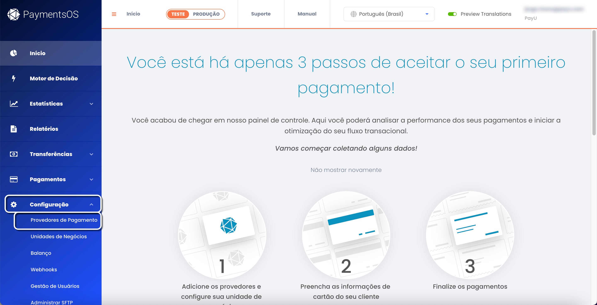
Use o campo Buscar na seção Criar uma nova configuração de Provedor e digite PayU para encontrar o provedor PayU Latam.
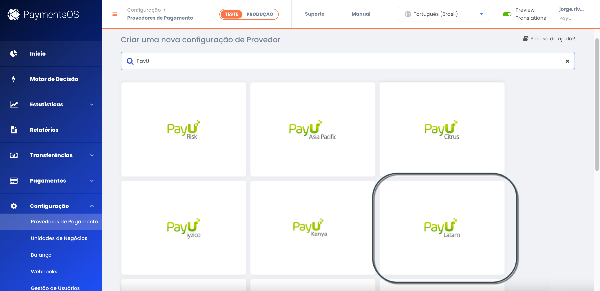
Insira as seguintes informações para a Configuração de Provedor:
| Parâmetro | Descrição |
|---|---|
| Configurar Nome | Insira um nome para a Configuração do Provedor. |
| Descrição | Insira uma descrição significativa para a Configuração de Provedor. Este valor é opcional. |
| apiLogin | Usuário ou login fornecido pelo PayU. Como faço para obter minha API Login |
| apiKey | Senha fornecida pelo PayU. Como faço para obter minha API key |
| accountId | ID da conta PayU de acordo com o país em que você vai vender. |
| merchantId | ID do seu negócio na PayU Latam. |
| paymentCountry | País de processamento no formato ISO 3166 Alpha-3. |
Quando terminar, clique em Salvar.
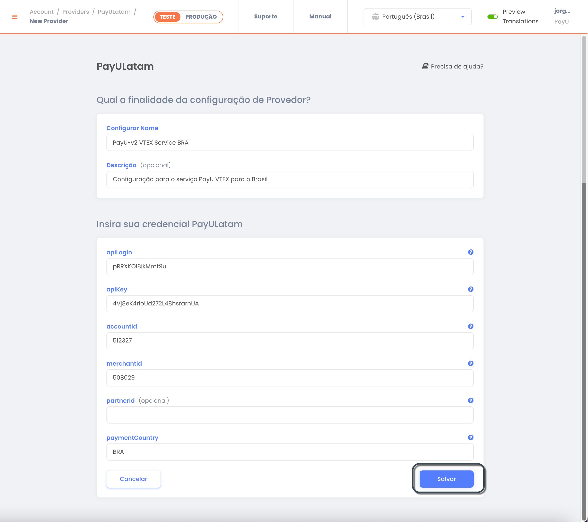
- Crie a Unidade de Negócios.
No painel do PaymentsOS, expanda o menu Configuração e selecione Unidades de Negócios.
Clique no botão Criar uma Unidade de Negócios e insira as seguintes informações:
| Parâmetro | Descrição |
|---|---|
| Nome da Unidade de Negócios | Nome da Unidade de Negócios. Este id deve estar em letras minúsculas e sem espaços. Certifique-se de ter inserido o valor correto para o id, pois este valor não pode ser atualizado posteriormente. |
| Descrição | Insira uma descrição significativa para a Unidade de Negócios. Esse valor é opcional. |
Na seção Escolha um Provedor padrão para esta Unidade de Negócios, escolha a Configuração do Provedor criada na etapa anterior.
Ao terminar, clique em Salvar.
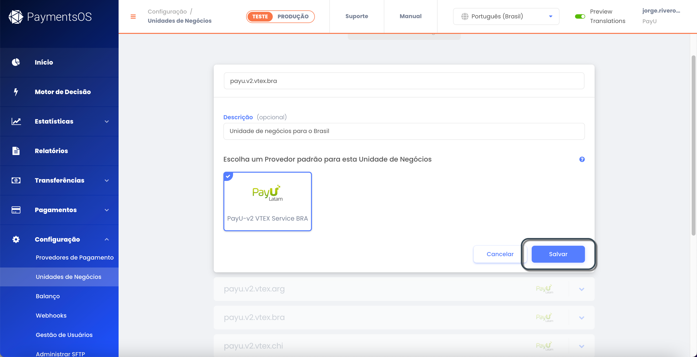
- Crie o webhook. Este WebHook é a URL de confirmação que receberá as notificações enviadas pela VTEX quando uma transação mudar de status.
De volta ao painel do PaymentsOS, expanda o menu Configuração e selecione Webhooks.
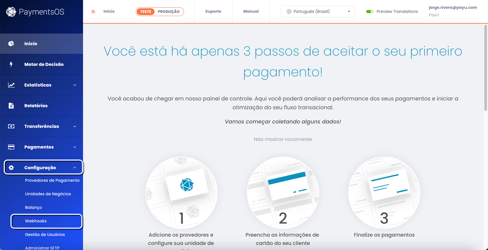
Clique no botão Criar Endpoint para Webhook e insira a URL de acordo com seu ambiente:
- Teste:
https://sandbox.api.payulatam.com/vtex-payments-integration/paymentsos/webhook - Produção:
https://api.payulatam.com/vtex-payments-integration/paymentsos/webhook
Na tabela Payment Events Alert, acione o evento Update para Authorization e Charge. Além disso, selecione no combo Unidades de Negócios Associadas a Unidade de Negócios criada na etapa anterior.
Ao terminar, clique em Criar.
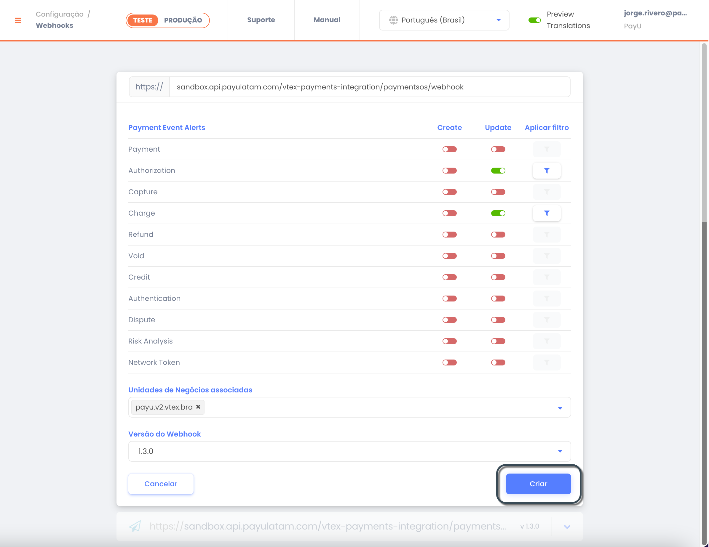
Neste ponto, você configurou sua conta do PaymentsOS como middleware, o próximo passo é a Configuração do provedor VTEX.
2. Configuração do provedor VTEX
Depois de configurar sua conta PaymentsOS, o próximo passo é a configuração do provedor VTEX para cada forma de pagamento. Para esta etapa, é obrigatório que você tenha um usuário válido para acessar o VTEX admin.
Configurar la afiliación de Gateway
Antes de configurar a Afiliação de Gateway, certifique-se de ter configurado o FingerPrint para PayU. Para isso, veja este artigo.
- No VTEX admin, expanda o menu Pagamentos dentro do grupo Transações. Em seguida, selecione Configurações.
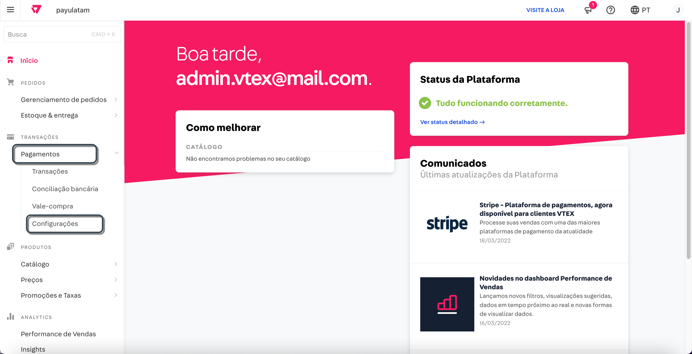
- Antes de prosseguir com as Condições de pagamento, você deve criar uma afiliação ao nosso gateway. No painel superior, clique em Afiliações de Gateways.
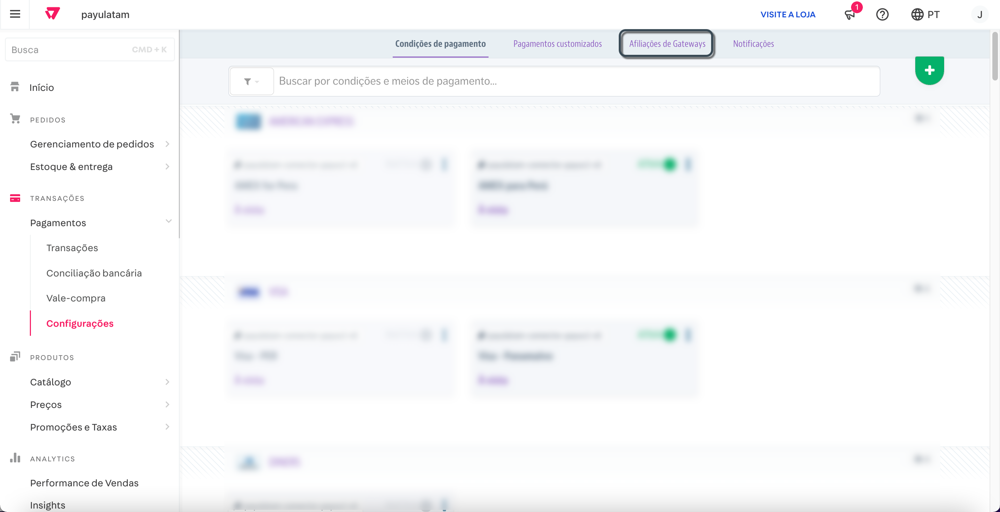
- Clique no ícone de adição. Desça até a seção OUTROS e localize o conector PayUv2.
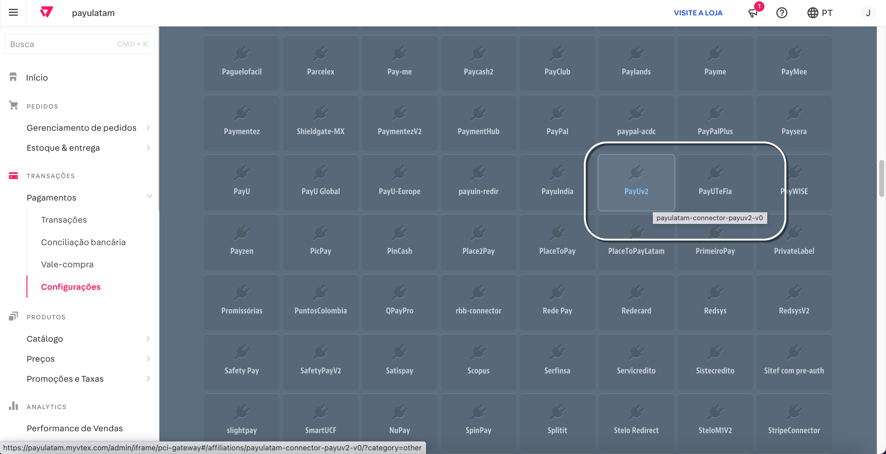
Importante
Certifique-se de selecionar o conector PayUv2, o procedimento explicado neste guia se aplica especificamente a este conector.- Nas configurações do conector, você precisa instalá-lo clicando no botão Instalar app. Em seguida, insira as seguintes informações.
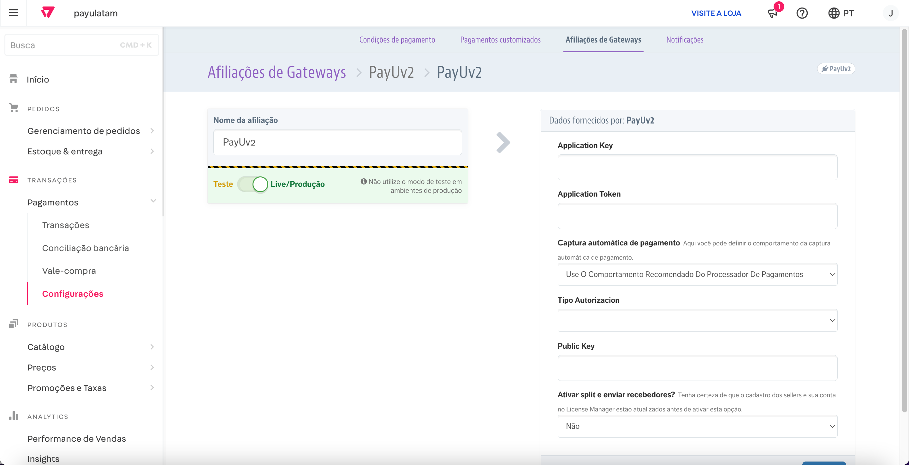
Observação
As informações do conector podem ser obtidas através do seguinte:
- Usando a coleção Postman.
Execute o método Retrieve Authentication Keys configurando o parâmetro globalenvparatestoulivede acordo com seu ambiente de processamento. - Usando o Painel de Controle do PaymentsOS.
Vá para Configuração > Unidades de Negócios ye selecione a unidade de negócios que você criou na etapa acima. Lembre-se que você deve usar o seletor na parte superior para escolher o ambiente de renderização.
Alguns valores estão ocultos por padrão, clique no ícone de olho para mostrá-los.
| Campo | Descrição |
|---|---|
| Nome da afiliação | Nome que você deseja atribuir para identificar a Afiliação de Gateway. |
| Seletor de Ambiente | Selecione o ambiente onde deseja criar as transações. De acordo com a seleção que fizer aqui, você deve inserir outros parâmetros selecionando o mesmo ambiente no PaymentsOS. |
| Application Key | ID do aplicativo da Unidade de Negócios. |
| Application Token | Chave de API privada da Unidade de Negócios. |
| Captura automática de pagamento | Selecione como deseja fazer a captura (pagamento) em sua afiliação.
Para obter mais informações, consulte Recurso de captura automática personalizada na documentação do desenvolvedor. O valor padrão de esta opção é de sete (7) dias após a aprovação. |
| Prazo agendado em horas para a captura automática | Este campo aparece quando você seleciona Agendada: Defina quando a captura automática será realizada como forma de captura de pagamento; selecione o período programado que deseja configurar de acordo com suas configurações. Este valor deve ser um número inteiro, portanto, decimais não são permitidos. |
| Tipo Autorizacion | Selecione se suas transações de pagamento são executadas em fluxos de uma ou duas etapas.
Consulte o seguinte link para saber mais sobre fluxos de pagamento. |
| Public Key | Chave de API pública da Unidade de negócios. |
| Ativar split e enviar recebedores? | Selecione Não neste campo. |
Quando terminar, clique em Salvar.
Configurar métodos de pagamento
Defina os métodos de pagamento a serem exibidos no site para pagamento. Veja nossos métodos de pagamento disponíveis.
Importante
- PSE (método colombiano de transferência bancária) não é suportado nesta versão do conector. Se você precisar configurar este método de pagamento, consulte o Procedimento para instalar o conector versão 1.
- PIX não está disponível no Brasil usando VTEX.
- As alterações nas condições de pagamento podem levar até 10 minutos para serem aplicadas ao fluxo de pagamento.
Configurar cartões de débito ou crédito
De acordo com seu país de processamento, você pode configurar a afiliação que criou para usar cartões de crédito ou débito* . Siga estas instruções para adicionar esta forma de pagamento à sua loja VTEX.
* O uso de cartões de débito depende do seu país de processamento.
Importante
Clique aqui se quiser saber como configurar cartões co-branded ou bandeira própria- Na opção Configuração (Transações > Pagamentos > Configurações), selecione a guia Condições de pagamento e clique no ícone de adição.
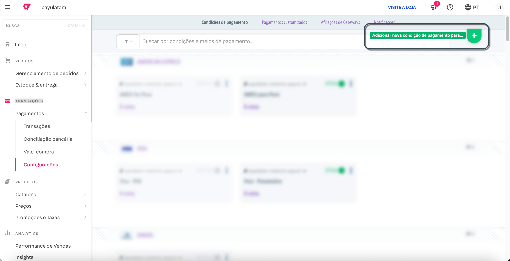
- Selecione o método de pagamento que deseja incluir. Os métodos de pagamento são agrupados por tipo.
Para nosso exemplo, selecionamos American Express na seção Cartão de crédito.
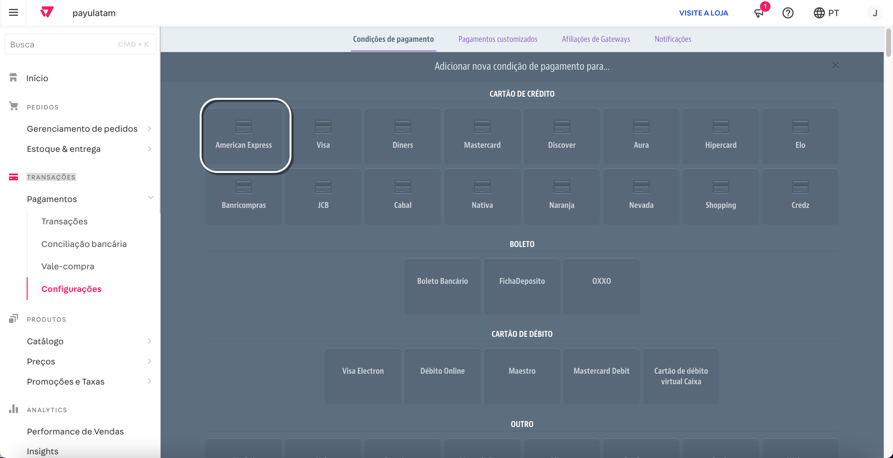
- Insira as seguintes informações.
- Nome da Regra (para fácil identificação): insira um nome significativo para a condição de pagamento ao lado do método de pagamento selecionada.
- Status: selecione o status da condição de pagamento. Você só pode ter uma condição de pagamento ativa por método de pagamento.
- Processar com a afiliação: selecione a afiliação do gateway configurada anteriormente.
- À vista ou parcelado?: selecione À vista*.
*O processamento de parcelas não é suportado.
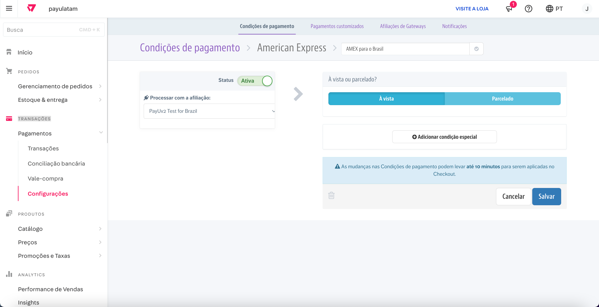
- Clique em Salvar. Quando você cria a condição de pagamento, ela é listada na guia Condições de pagamento.
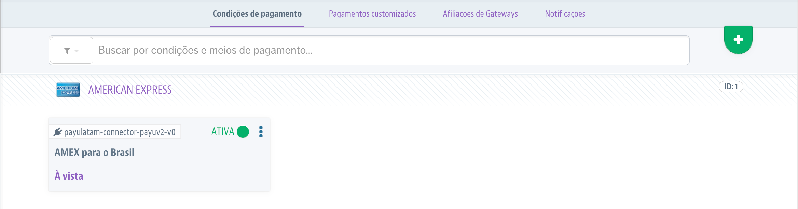
Configurar cartões co-branded ou bandeira própria
Os cartões co-branded ou bandeira própria são cartões emitidos por uma loja ou marca em associação com uma rede como AMEX, VISA, MasterCard, etc. Siga estas instruções para adicionar esta forma de pagamento à sua loja VTEX.
- Na opção Configuração (Transações > Pagamentos > Configurações), selecione a guia Pagamentos customizados.
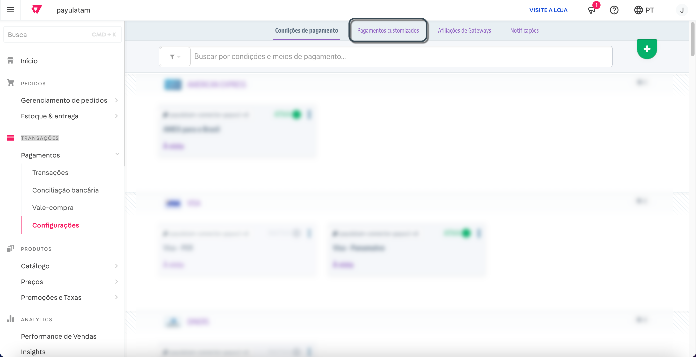
- Nesta guia, você tem cinco (5) slots disponíveis para configurar cartões co-branded e bandeira própria. Neste exemplo, vamos configurar o cartão Colombian Codensa que é um cartão bandeira própria.
Clique em qualquer uma das caixas disponíveis na seção CCartões da Loja (Bandeira Própria).
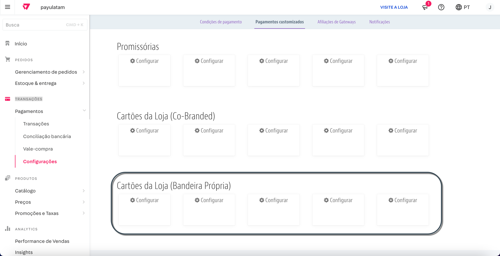
- Insira as seguintes informações usando as letras maiúsculas e minúsculas mostradas.
- Nome:
Codensa. - Descrição:
Codensa - Faixas de Bin:
590712-590712 - Código de pagamento do adquirente:
codensa
Observação
Para cartões co-branded, você deve selecionar a marca do mesmo.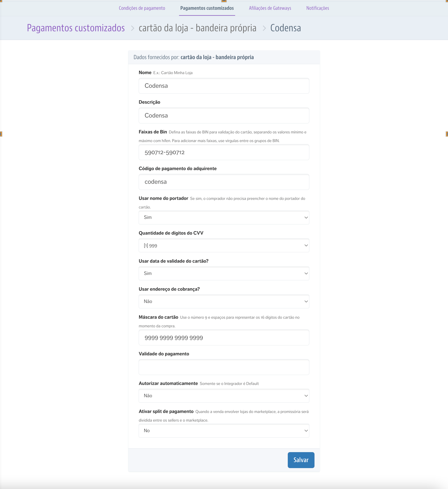
Os valores restantes podem ser deixados como padrão. Use os seguintes valores para configurar cartões de marca compartilhada e de marca privada.
| País | Nome | Descrição | Faixas de Bin | Código de pagamento do adquirente |
|---|---|---|---|---|
 |
Argencard | Argencard | 501105-532362 |
argencard |
|
Cabal | Cabal | 60423,60400,589657 |
cabal |
|
Cencosud | Cencosud | 603493-603493 |
cencosud |
|
Naranja | Naranja | 589562 |
naranja |
|
Shopping | Shopping | 603488 |
shopping |
 |
Codensa | Codensa | 590712-590712 |
codensa |
Para mais informações sobre como configurar co-branded e bandeira própria, consulte a central de ajuda da VTEX.
- Clique em Salvar. Assim que o pagamento customizado for criado, você será redirecionado para a opção de criar um novo Condições de pagamento. Esta condição de pagamento é criada conforme explicado na seção Configurar cartões de crédito ou débito.
Configurar métodos de pagamento em dinheiro
Como as formas de pagamento à vista exigem que o cliente pague em escritórios físicos, você pode configurar essa forma de pagamento na VTEX como Notas Promissórias.
Observação
Este procedimento não é obrigatório para Boleto Bancário no Brasil, basta configurar esta forma de pagamento como condição de pagamento.Ao configurar uma forma de pagamento em dinheiro, seus clientes são redirecionados para o checkout PayU para baixar o comprovante de pagamento e pagar no respectivo escritório físico. Siga as instruções abaixo para adicionar esta forma de pagamento à sua loja VTEX.
- Na opção Configuração (Transações > Pagamentos > Configurações), selecione a guia Pagamentos customizados.
- Nesta guia, você tem cinco (5) slots disponíveis para configurar pagamentos em dinheiro. Neste exemplo, vamos configurar o
OXXO, um método mexicano de pagamento em dinheiro.
Clique em qualquer uma das caixas disponíveis na seção Promissórias.
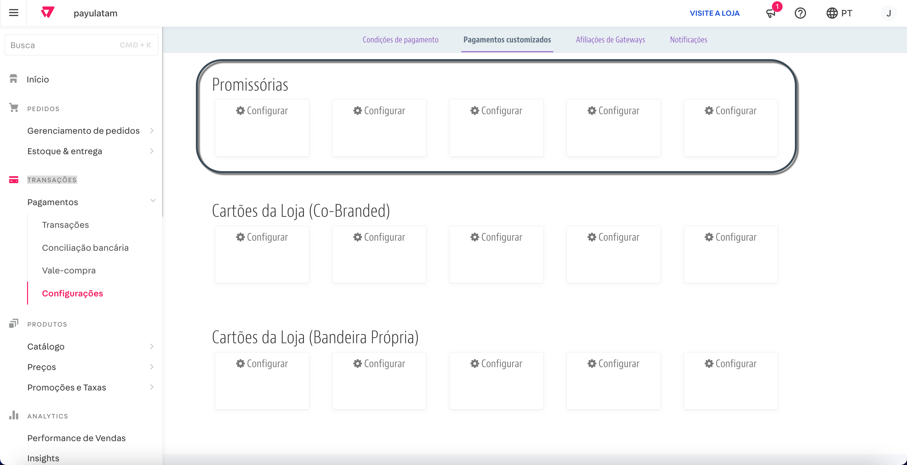
- Insira as seguintes informações para o método de pagamento em dinheiro.
- Nome: neste parâmetro, você precisa usar o valor mostrado aqui na coluna
Parâmetro paymentMethod. Para este exemplo, definimosOXXO. - Descrição: Insira a descrição que deseja exibir quando o cliente selecionar esta forma de pagamento. Este parâmetro é opcional.
- Validade da promissória: Informe o número de dias antes do vencimento do pagamento em dinheiro. Por padrão, esse valor é atribuído a sete dias.
Você deixa os outros parâmetros com seus valores padrão
- Clique em Salvar. Assim que o pagamento customizado for criado, você será redirecionado para a opção de criar um novo Condições de pagamento. Esta condição de pagamento é criada conforme explicado na seção Configurar cartões de crédito ou débito.
Teste a integração
Depois de configurar as Condições de pagamento para seus métodos de pagamento, é recomendável testar a integração antes de começar a receber transações reais. Como pré-requisito, verifique se sua conta do PaymentsOS está no modo TESTE, bem como o Seletor de ambiente em sua Afiliação do Gateway.
- No VTEX admin, clique em VISIT A LOJA no painel superior.

- A loja configurada para sua conta VTEX é aberta. Selecione qualquer produto e clique em comprar.

- No carrinho de compras, clique no botão fechar pedido.

- Na seção de pagamento, aparecem os meios de pagamento agrupados por tipo. Selecione aquele que você deseja testar e insira os dados do teste. Encontre aqui alguns números de cartões de teste e informações para testar os status.
Finalmente, clique em Finalizar .

Assim que a compra for aprovada, você poderá verificá-la em:
- VTEX admin: Pagamentos > Transações.
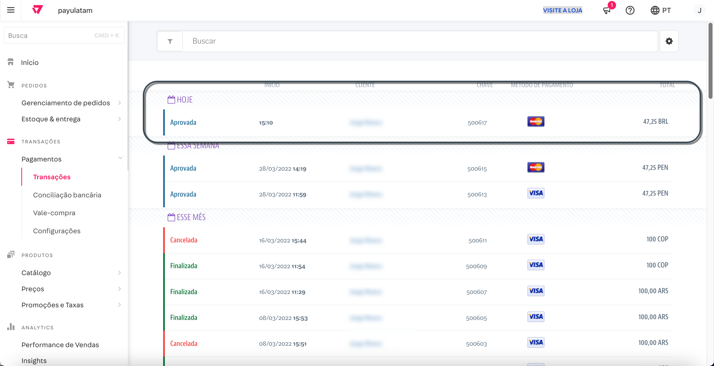
-
Painel de controle de PaymentsOS: Pagamentos > Buscar.
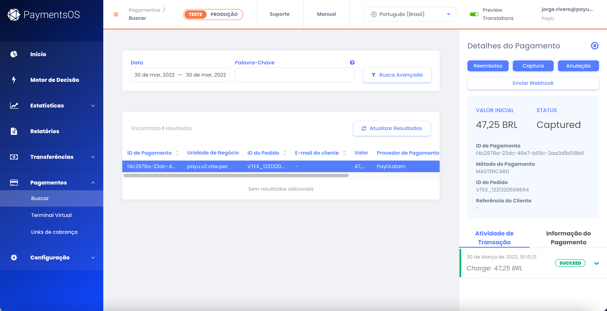
O parâmetro ID de Transação Externa dentro de Atividade de Transação é o OrderID da PayU. -
Módulo PayU: no Relatório de Vendas.

- Query API usando o parâmetro ID de Transação Externa como OrderID.
Probar flujos de dos pasos
Quando você configura sua Afiliação do Gatewa para processar transações em fluxos de duas etapas, os fundos autorizados do cartão de crédito não são capturados até que você solicite explicitamente a captura. Para solicitar a captura, você precisa faturar o pedido.
Para faturar um pedido, localize a transação no VTEX Admin (Pagamentos > Transações) e clique sobre ela. Em seguida, clique no botão Pedido no canto superior direito.
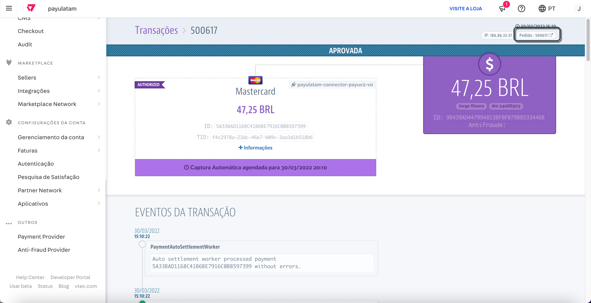
Role para baixo até a seção Pacote e clique em Faturar pacote.
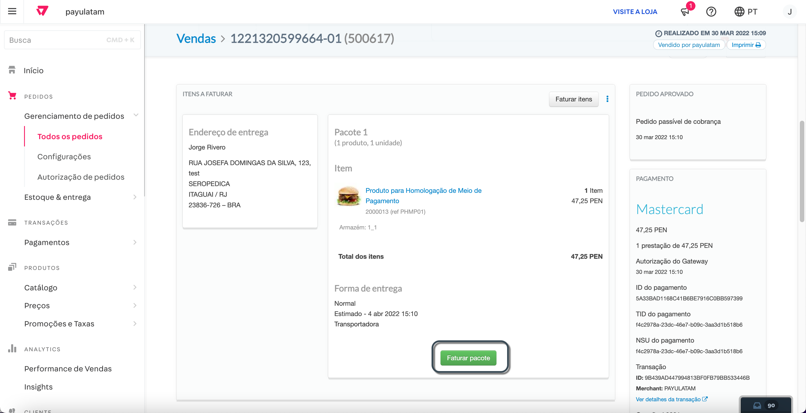
Forneça as informações da sua fatura e clique em Enviar Nota na parte inferior do painel. Após o envio da fatura ao cliente, o valor autorizado é debitado no cartão do cliente.
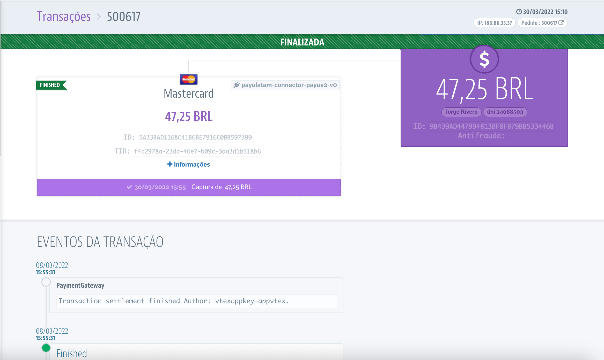